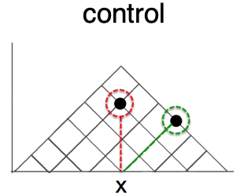
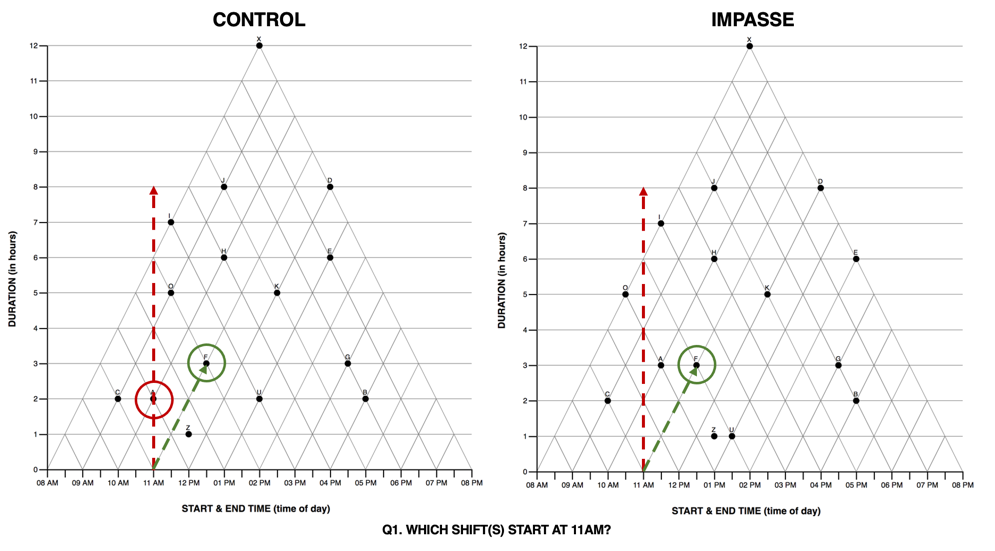

CODE
library(codebook) #data dictionary
library(tidyverse) #ALL THE THINGS
library(kableExtra) #tables
#set some output options
library(dplyr, warn.conflicts = FALSE)
options(dplyr.summarise.inform = FALSE)
options(scipen=1, digits=3)Study SGC3A | 1 Introduction
In Study 3A we explore the extent to which confronting a learner with an implicit obstacle (a mental impasse) influences their interpretation of the underlying coordinate system. This is a hypothesis that emerged from analysis of Study 2, leading us to suspect that presenting a learner with a situation that induces a state of impasse will increase the probability that learners experience a moment of insight, and in turn restructure their interpretation of the coordinate system.
 |
Control-Condition Demo: 111 |
| Impasse-Condition Demo: 121 |
In the context of Study 2, an impasse state was (unintentionally) induced when the combination of question + data set yielded no available answer in the incorrect (cartesian) interpretation of the graph. In Study 3A, we test this hypothesis by comparing performance between a (treatment) group receiving impasse-inducing questions followed by normal questions, and a non-impasse control.


library(codebook) #data dictionary
library(tidyverse) #ALL THE THINGS
library(kableExtra) #tables
#set some output options
library(dplyr, warn.conflicts = FALSE)
options(dplyr.summarise.inform = FALSE)
options(scipen=1, digits=3)# HACK WD FOR LOCAL RUNNING?
# imac = "/Users/amyraefox/Code/SGC-Scaffolding_Graph_Comprehension/SGC-X/ANALYSIS/MAIN"
# # mbp = "/Users/amyfox/Sites/RESEARCH/SGC—Scaffolding Graph Comprehension/SGC-X/ANALYSIS/MAIN"
# setwd(imac)
#IMPORT DATA
df_subjects <- read_rds('analysis/SGC3A/data/1-study-level/sgc3a_participants.rds')
# df_subjects <- read_csv('analysis/SGC3A/data/1-study-level/sgc3a_participants.csv') title = "Participants by Condition and Data Collection Period"
cols = c("Control Condition","Impasse Condition","Total for Period")
cont <- table(df_subjects$term, df_subjects$condition)
cont %>% addmargins() %>% kbl(caption = title, col.names = cols) %>% kable_classic()| Control Condition | Impasse Condition | Total for Period | |
|---|---|---|---|
| fall17 | 27 | 27 | 54 |
| spring18 | 35 | 37 | 72 |
| fall21 | 68 | 71 | 139 |
| winter22 | 28 | 37 | 65 |
| Sum | 158 | 172 | 330 |
Experimental Hypothesis: Learners posed with impasse-inducing questions will be more likely to correct interpret the graph.
Null Hypothesis: No significant differences in performance will exist between learners in the impasse and control conditions.
Exploratory Questions
We employed a mixed design with 1 between-subjects factor with 2 levels (Scaffold: control, impasse) and 15 items (within-subjects factor).
Independent Variables:
Dependent Variables:
Stimuli consisted of a series of 15 graph comprehension questions, each testing a different combination of time interval relations, to be read from a Triangular-Model graph. Figure 10.1. The list of questions can be found here.

Note that across both control and impasse conditions, both the question, response options and graph structure were identical. The experimental manipulation (posing a mental impasse) was accomplished by changing the position of datapoints in the impasse-condition graph, such that for any given question, there was no available response option if the reader were to interpret the graph as cartesian (making an orthogonal rather than diagonal projection from the x-axis.)
The green line indicates the ideal-scanpath to the correct (triangular) answer to the first question, and the red line indicates the (incorrect) orthogonal interpretation. In the IMPASSE figure (at right), there are no data points that intersect the red line. We hypothesize that this presents the reader with an obstacle, at which point they are forced to confront their interpretation of the coordinate system and (ideally) develop a new strategy.

Participants completed the study via a web-browser.
(1) Upon starting, they submitted informed consent, before reading task instructions.
(2) Participants were introduced to a scenario in which they were to play the role of a project manager, scheduling shifts for a group of employees. The schedule of the employees was presented in a TriangularModel (TM) graph, and they would be answering question about the schedule.
(3) Then participants completed an experimental block of 15 items.
(3A) The first five items in the task are defined as the SCAFFOLDING block. In the IMPASSE condition, the first five questions included an IMPASSE problem state. For participants in the CONTROL condition, the dataset was structure such that there was always an available ‘orthogonal answer’ for the first 5 questions.
(3B) The remaining 10 items are defined as the TESTING block. In both conditions, these questions were not structured as impasse (i.e. contained an available orthogonal answer)
(4) Following the experimental block, participants answered a free-response question about their strategy for reading the graph, followed by a demographic questionnaire and debrief.
Data was collected by convenience sample of a university subject pool. Initial data (Fall 2017, Spring 2018) were collected in-person, with large groups of students simultaneously completing the study (independently) in a computer lab. In Fall 2021 and Winter 2022 we collected additional data to replicate results in a remote format (students completing the study asynchronously on their own computers).
Data were collected via a custom web application and stored in a NoSQL database. The following exclusion criteria were applied during data cleaning:
Before analysis, data files from individual data collection periods are harmonized into a common data format.
| Pre-Requisite | Followed By |
|---|---|
| spring17_clean_data.Rmd spring18_clean_data.Rmd fall21_clean_data.Rmd winter2022_clean_sgc3a.Rmd |
2_sgc3A_scoring.qmd |
Data for study SGC_3A were collected across four time periods, interrupted by the Covid-19 pandemic.
| Period | Modality |
|---|---|
| Fall 2017 | in person, SONA groups in computer lab |
| Spring 2018 | in person, SONA groups in computer lab |
| Fall 2021 | asynchronous, online, SONA |
| Winter 2022 | asynchronous, online, SONA |
Data collected in Fall 2017, Spring 2018 constitute the original SGC_3A study, conducted in person. Data collected in Fall 2021, Winter 2022 constitute the web-based replication, conducted online (asynchronously). In all cases, the experiment was administered via a web application.
The underlying data structure of the stimulus web application changed across the data collection period, resulting in slightly different data files (i.e. columns are not named consistently). In this section, we combine the files from each data collection period into a single harmonized data file for analysis (one for participants, one for items).
First we import participant-level data from each data collection period, selecting only the columns relevant for analysis, and renaming columns to be consistent across each file. The result is a single data frame df_subjects containing one row for each subject (across all periods). Note that we are not discarding any response data. Rather, we discard columns that are automatically recorded by the stimulus web application and help the application run.
Note that we discard some columns representing scores calculated in the stimulus engine. These scores were calculated differently across collection periods, and so we discard them and recalculate scores in the next analysis notebook. No raw data (responses and response times) are discarded, only algorithmically-derived scores for the responses.
#IMPORT PARTICIPANT DATA
# HACK WD FOR LOCAL RUNNING?
# imac = "/Users/amyraefox/Code/SGC-Scaffolding_Graph_Comprehension/SGC-X/ANALYSIS/MAIN"
# # mbp = "/Users/amyfox/Sites/RESEARCH/SGC—Scaffolding Graph Comprehension/SGC-X/ANALYSIS/MAIN"
# setwd(imac)
#set datafiles
fall17 <- "analysis/SGC3A/data/0-session-level/fall17_sgc3a_participants.csv"
spring18 <- "analysis/SGC3A/data/0-session-level/spring18_sgc3a_participants.csv"
fall21 <- "analysis/SGC3A/data/0-session-level/fall21_sgc3a_participants.csv"
winter22 <- "analysis/SGC3A/data/0-session-level/winter22_sgc3a_participants.rds"
#read datafiles, set mode and term
df_subjects_fall17 <- read_csv(fall17) %>% mutate(mode = "lab-synch", term = "fall17")Rows: 54 Columns: 24
── Column specification ────────────────────────────────────────────────────────
Delimiter: ","
chr (9): subject, session, term, axis, native_language, year, major, countr...
dbl (15): condition, ts_n, tt_n, triangular_score, os_n, ot_n, orthogonal_sc...
ℹ Use `spec()` to retrieve the full column specification for this data.
ℹ Specify the column types or set `show_col_types = FALSE` to quiet this message.df_subjects_spring18 <- read_csv(spring18) %>% mutate(mode = "lab-synch", term = "spring18")Rows: 72 Columns: 24
── Column specification ────────────────────────────────────────────────────────
Delimiter: ","
chr (9): subject, session, term, axis, native_language, year, major, countr...
dbl (15): condition, ts_n, tt_n, triangular_score, os_n, ot_n, orthogonal_sc...
ℹ Use `spec()` to retrieve the full column specification for this data.
ℹ Specify the column types or set `show_col_types = FALSE` to quiet this message.df_subjects_fall21 <- read_csv(fall21) %>% mutate(mode = "asynch", term = "fall21")Rows: 139 Columns: 24
── Column specification ────────────────────────────────────────────────────────
Delimiter: ","
chr (9): subject, session, term, axis, native_language, year, major, countr...
dbl (15): condition, ts_n, tt_n, triangular_score, os_n, ot_n, orthogonal_sc...
ℹ Use `spec()` to retrieve the full column specification for this data.
ℹ Specify the column types or set `show_col_types = FALSE` to quiet this message.df_subjects_winter22 <- read_rds(winter22) #use RDS file as it contains metadata
#SAVE METADATA FROM WINTER, but no rows
df_subjects <- df_subjects_winter22 %>% filter(condition=='X') %>% select(
subject,condition,term,mode,
gender,age,language, schoolyear, country,
effort,difficulty,confidence,enjoyment,other,
totaltime_m, absolute_score,
#exploratory factors
violations, browser, width, height
)
#reduce data collected using OLD webapp to useful columns
df_subjects_before <- rbind(df_subjects_fall17, df_subjects_spring18, df_subjects_fall21) %>%
#rename and summarize some columns
mutate(
totaltime_m = totalTime / 1000 / 60,
absolute_score = triangular_score,
language = native_language,
gender = sex,
schoolyear = year) %>%
#create placeholders for cols not collected until NEW webapp [for later rbind]
mutate(
effort = "NULL",
difficulty = "NULL",
confidence = "NULL",
enjoyment = "NULL",
other = "NULL",
disability = "NULL",
violations = "NULL",
browser = "NULL",
width = "NULL",
height = "NULL"
) %>%
#select only columns we'll be analyzing, discard others
dplyr::select(subject, condition, term, mode,
#demographics
gender, age, language, schoolyear, country,
#placeholder effort survey
effort, difficulty, confidence, enjoyment,
#placeholder misc
other, disability,
#response characteristics
totaltime_m, absolute_score,
#exploratory factors
violations, browser, width, height)
#save 'explanation' columns from winter22, which is actually a response to a free response item (Q16); was recorded with item_level data in old webapp
df_winter22_q16 <- df_subjects_winter22 %>%
select(subject, condition, term , mode, explanation) %>%
mutate(
q = 16,
response = explanation
) %>% select(-explanation)
#reduce data collected using NEW webapp to useful columns
df_subjects_winter22 <- df_subjects_winter22 %>%
mutate(score = absolute_score) %>%
#select only columns we'll be analyzing, discard others
dplyr::select( subject, condition, term, mode,
#demographics
gender, age, language, schoolyear, country,
#effort survey
effort, difficulty, confidence, enjoyment,
#explanations
other,disability,
#response characteristics
totaltime_m, absolute_score,
#exploratory factors
violations, browser, width, height)
effort_labels <- c("I tried my best on each question", "I tried my best on most questions")
#combine dataframes from old and new webapps
df_subjects <- rbind(df_subjects, df_subjects_winter22, df_subjects_before) %>%
#refactor factors
mutate (
subject = factor(subject),
condition = factor(condition),
pretty_condition = recode_factor(condition, "111" = "control", "121" = "impasse"),
term = factor(term, levels= c("fall17","spring18","fall21","winter22")),
mode = factor(mode, levels=c("lab-synch","asynch")),
gender = factor(gender),
schoolyear = factor(schoolyear, levels=c("First","Second","Third","Fourth","Fifth","Other"))
)
#FIX METADATA
#Add metadata for columns that lost it [factors, for some reason!]
var_label(df_subjects$subject) <- "ID of subject (randomly assigned in stimulus app)."
var_label(df_subjects$condition) <- "ID indicates randomly assigned condition (111 -> control, 121 -> impasse)."
var_label(df_subjects$term) <- "indicates if session was run with experimenter present or asynchronously"
var_label(df_subjects$mode) <- "indicates mode in which the participant completed the study"
var_label(df_subjects$gender) <- "What is your gender identity?"
var_label(df_subjects$schoolyear) <- "What is your year in school?"
#CLEANUP
rm(df_subjects_fall17,df_subjects_fall21, df_subjects_spring18, df_subjects_winter22,df_subjects_before)
rm(fall17,fall21,spring18,winter22)Next we import item-level data from each data collection period, selecting only the columns relevant for analysis, and renaming columns to be consistent across each file. The result is a single data frame df_items containing one row for each graph comprehension task question (qs=15) (across all periods). A second data frame df_freeresponse contains one row for each free response strategy question (last question posed to participants in Winter2022) Note that we do not discard any response data. Rather, we do discard several columns representing accuracy scores for responses that were calculated in the stimulus engine. These scores were calculated differently across collection periods, and so we discard them and recalculate scores in the next analysis notebook. Original response data are always preserved.
# HACK WD FOR LOCAL RUNNING?
# imac = "/Users/amyraefox/Code/SGC-Scaffolding_Graph_Comprehension/SGC-X/ANALYSIS/MAIN"
# #mbp = "/Users/amyfox/Sites/RESEARCH/SGC—Scaffolding Graph Comprehension/SGC-X/ANALYSIS/MAIN"
# setwd(imac)
#set datafiles
fall17 <- "analysis/SGC3A/data/0-session-level/fall17_sgc3a_blocks.csv"
spring18 <- "analysis/SGC3A/data/0-session-level/spring18_sgc3a_blocks.csv"
fall21 <- "analysis/SGC3A/data/0-session-level/fall21_sgc3a_blocks.csv"
winter22 <- "analysis/SGC3A/data/0-session-level/winter22_sgc3a_items.rds"
#read datafiles, set mode and term
df_items_fall17 <- read_csv(fall17) %>% mutate(mode = "lab-synch", term = "fall17")Rows: 810 Columns: 13
── Column specification ────────────────────────────────────────────────────────
Delimiter: ","
chr (6): subject, session, term, question, answer, axis
dbl (7): condition, q, rt, correct, orth_correct, explicit, impasse
ℹ Use `spec()` to retrieve the full column specification for this data.
ℹ Specify the column types or set `show_col_types = FALSE` to quiet this message.df_items_spring18 <- read_csv(spring18) %>% mutate(mode = "lab-synch", term = "spring18")Rows: 1124 Columns: 13
── Column specification ────────────────────────────────────────────────────────
Delimiter: ","
chr (6): subject, session, term, question, answer, axis
dbl (7): condition, q, rt, correct, orth_correct, explicit, impasse
ℹ Use `spec()` to retrieve the full column specification for this data.
ℹ Specify the column types or set `show_col_types = FALSE` to quiet this message.df_items_fall21 <- read_csv(fall21) %>% mutate(mode = "asynch", term = "fall21")Rows: 2224 Columns: 13
── Column specification ────────────────────────────────────────────────────────
Delimiter: ","
chr (6): subject, session, term, question, answer, axis
dbl (7): condition, q, rt, correct, orth_correct, explicit, impasse
ℹ Use `spec()` to retrieve the full column specification for this data.
ℹ Specify the column types or set `show_col_types = FALSE` to quiet this message.df_items_winter22 <- read_rds(winter22) #use RDS file as it contains metadata
#get mapping being question # and interval relation the question tests, that is encoded only in the winter22 data files
map_relations <- df_items_winter22 %>% group_by(q) %>% select(q,relation) %>% unique()
#SAVE METADATA FROM WINTER, but no rows
df_items <- df_items_winter22 %>% filter(condition=='X') %>% select(
subject,condition,term,mode,
question, q, answer, correct, rt_s
)
#reduce data collected using old webapp
df_items_before <- rbind(df_items_fall17, df_items_spring18, df_items_fall21) %>%
mutate(rt_s = rt / 1000, correct = as.logical(correct)) %>%
select(subject, condition, term, mode, question, q, answer, correct, rt_s)
#reduce data collected using new webapp
df_items_winter22 <- df_items_winter22 %>%
select(subject, condition, term, mode, question, q, answer, correct, rt_s) %>% #unfactor before combine
mutate(
subject = as.character(subject),
condition = as.character(condition),
term = as.character(term),
mode = as.character(mode),
q = as.integer(q),
correct = as.logical(correct)
)
#combine dataframes from old and new webapps
df_items <- rbind(df_items, df_items_winter22,df_items_before) %>%
#refactorize columns
mutate(
subject = factor(subject),
condition = factor(condition),
term = factor(term, levels= c("fall17","spring18","fall21","winter22")),
mode = factor(mode, levels=c("lab-synch","asynch")),
q = as.integer(q)) %>%
#rename answer column to RESPONSE
rename(response = answer) %>%
#remove all commas and make as character string
mutate(
response = str_remove_all(as.character(response), ","),
num_o = str_length(response)
) %>%
# handle NA values (why are some empty responses blank and others NA?)
mutate(
response = replace_na(response, ""),
num_o = replace_na(num_o, 0)
)
#FIX METADATA
#Add metadata for columns that lost it [factors, for some reason!]
var_label(df_items$subject) <- "ID of subject (randomly assigned in stimulus app)."
var_label(df_items$condition) <- "ID indicates randomly assigned condition (111 -> control, 121 -> impasse)."
var_label(df_items$term) <- "indicates if session was run with experimenter present or asynchronously"
var_label(df_items$mode) <- "indicates mode in which the participant completed the study"
var_label(df_items$q) <- "Question Number (in order)"
var_label(df_items$correct) <- "Is the response (strictly) correct? [dichotomous scoring]"
var_label(df_items$response) <- "options (datapoints) selected by the subject"
var_label(df_items$num_o) <- "number of options selected by the subject"
#HANDLE FREE RESPONSE QUESTION #16
#save `free response` Q#16 in its own dataframe
df_freeresponse <- df_items %>% filter(q == 16) %>% select(-question,-correct,-rt_s,-num_o)
#add data from wi22 [stored on subject data]
df_freeresponse <- rbind(df_freeresponse, df_winter22_q16)
#add question description
df_freeresponse <- df_freeresponse %>% mutate(
question = "Please describe how to determine what event(s) start at 12pm?",
response = as.character(response) #doesn't need to be factor
)
#remove 'free response' Q#16 from df_items
df_items <- df_items %>% filter (q != 16)
#add back pretty condition
df_items <- df_items %>% mutate(
pretty_condition = recode_factor(condition, "111" = "control", "121" = "impasse")
)
#CLEANUP
rm(df_items_fall17,df_items_fall21, df_items_spring18, df_items_winter22, df_items_before, df_winter22_q16)
rm(fall17,fall21,spring18,winter22, map_relations)Next, we validate that we have the complete number of item-level records based on the number of subject-level records
#the number of items should be equal to 15 x the number of subjects
nrow(df_items) == 15* nrow(df_subjects) #TRUE[1] TRUE#each subject should have 15 items
df_items %>% group_by(subject) %>% summarise(n = n()) %>% filter(n != 15) %>% nrow() == 0[1] TRUEFinally, we export the (session-harmonized) data for analysis, as CSVs, and .RDS (includes metadata)
# HACK WD FOR LOCAL RUNNING?
# imac = "/Users/amyraefox/Code/SGC-Scaffolding_Graph_Comprehension/SGC-X/ANALYSIS/MAIN"
# #mbp = "/Users/amyfox/Sites/RESEARCH/SGC—Scaffolding Graph Comprehension/SGC-X/ANALYSIS/MAIN"
# setwd(imac)
#SAVE FILES
write.csv(df_subjects,"analysis/SGC3A/data/1-study-level/sgc3a_participants.csv", row.names = FALSE)
write.csv(df_items,"analysis/SGC3A/data/1-study-level/sgc3a_items.csv", row.names = FALSE)
write.csv(df_freeresponse,"analysis/SGC3A/data/1-study-level/sgc3a_freeresponse.csv", row.names = FALSE)
#SAVE R Data Structures
#export R DATA STRUCTURES (include codebook metadata)
rio::export(df_subjects, "analysis/SGC3A/data/1-study-level/sgc3a_participants.rds") # to R data structure file
rio::export(df_items, "analysis/SGC3A/data/1-study-level/sgc3a_items.rds") # to R data structure fileBecause the graph comprehension task utilizes a Multiple-Response (MR) format (rather than simple multiple choice), the raw response data (the combination of answer options selected) for each question first need to be assigned a score. Approaches to scoring MR data and score transformations are derived in Section 2.
Experimental hypotheses are tested in Section 4.
Further data analyses are documented in Section 5.
sessionInfo()R version 4.2.1 (2022-06-23)
Platform: x86_64-apple-darwin17.0 (64-bit)
Running under: macOS Big Sur ... 10.16
Matrix products: default
BLAS: /Library/Frameworks/R.framework/Versions/4.2/Resources/lib/libRblas.0.dylib
LAPACK: /Library/Frameworks/R.framework/Versions/4.2/Resources/lib/libRlapack.dylib
locale:
[1] en_US.UTF-8/en_US.UTF-8/en_US.UTF-8/C/en_US.UTF-8/en_US.UTF-8
attached base packages:
[1] stats graphics grDevices utils datasets methods base
other attached packages:
[1] kableExtra_1.3.4 forcats_0.5.1 stringr_1.4.0 dplyr_1.0.9
[5] purrr_0.3.4 readr_2.1.2 tidyr_1.2.0 tibble_3.1.7
[9] ggplot2_3.3.6 tidyverse_1.3.1 codebook_0.9.2
loaded via a namespace (and not attached):
[1] Rcpp_1.0.8.3 svglite_2.1.0 lubridate_1.8.0 assertthat_0.2.1
[5] digest_0.6.29 utf8_1.2.2 R6_2.5.1 cellranger_1.1.0
[9] backports_1.4.1 reprex_2.0.1 labelled_2.9.1 evaluate_0.15
[13] highr_0.9 httr_1.4.3 pillar_1.7.0 rlang_1.0.3
[17] curl_4.3.2 readxl_1.4.0 data.table_1.14.2 rstudioapi_0.13
[21] rmarkdown_2.14 webshot_0.5.3 foreign_0.8-82 htmlwidgets_1.5.4
[25] bit_4.0.4 munsell_0.5.0 broom_0.8.0 compiler_4.2.1
[29] modelr_0.1.8 xfun_0.31 pkgconfig_2.0.3 systemfonts_1.0.4
[33] htmltools_0.5.2 tidyselect_1.1.2 rio_0.5.29 fansi_1.0.3
[37] viridisLite_0.4.0 crayon_1.5.1 tzdb_0.3.0 dbplyr_2.2.1
[41] withr_2.5.0 grid_4.2.1 jsonlite_1.8.0 gtable_0.3.0
[45] lifecycle_1.0.1 DBI_1.1.3 magrittr_2.0.3 scales_1.2.0
[49] zip_2.2.0 vroom_1.5.7 cli_3.3.0 stringi_1.7.6
[53] fs_1.5.2 xml2_1.3.3 ellipsis_0.3.2 generics_0.1.2
[57] vctrs_0.4.1 openxlsx_4.2.5 tools_4.2.1 bit64_4.0.5
[61] glue_1.6.2 hms_1.1.1 parallel_4.2.1 fastmap_1.1.0
[65] yaml_2.3.5 colorspace_2.0-3 rvest_1.0.2 knitr_1.39
[69] haven_2.5.0